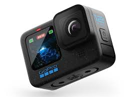

Acti MovR 12 Black Features
The Acti MovR 12 Black is the ultimate action camera designed for adventurers and creators. It offers 5.3K video at 60fps, 27MP photos, and HyperSmooth 5.0 stabilization. Built to be durable and waterproof up to 33 feet, it's perfect for extreme conditions.
- Resolution: 5.3K video, 27MP photos
- Waterproof: Up to 33ft (10m)
- Battery Life: Up to 2 hours continuous recording
- Special Features: HyperSmooth 5.0, TimeWarp 3.0, Voice Control
- Price: $299.99

Acti MovR 13 Black Features
The MovR 13 is the next step in action camera development, with an impressive range of accessories that mount directly onto the camera. You can do just about anything with this versatile device.
- Waterproof: Completely waterproof up to 10 meters
- Dustproof: Dust proof right out of the box
- Stabilization: Optical image stabilization for smooth video
- Resolution: Buttery smooth 4K video at 60fps
- Slow-motion: Slow motion up to 400fps
- price$499.99